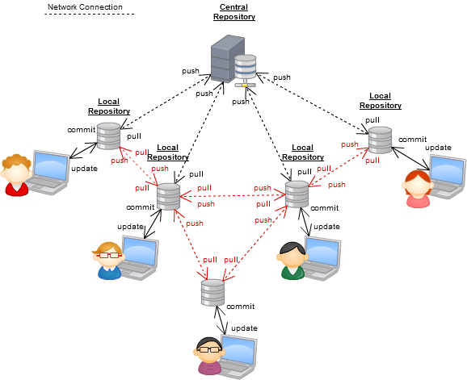
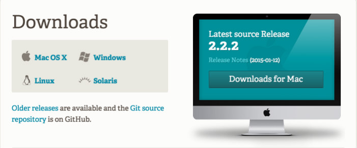

Intro to Git and Github
Welcome!
Girl Develop It is here to provide affordable and accessible programs to learn software through mentorship and hands-on instruction.
Some "rules"
- We are here for you!
- Every question is important
- Help each other
- Have fun
Welcome!
Tell us about yourself.
- Who are you?
- What do you want to learn here tonight?
- Finish this sentence: "In a former life, I was..."
What we will cover today
- What is version control and why should we care?
- Basics of git -- the essential commands
- GitHub: a little git between friends
What is version control?
Version control is a tool that allows you to...
Collaborate
Create anything with other people, from academic papers to entire websites and applications.
Track and revert changes
Mistakes happen. Wouldn't it be nice if you could see the changes that have been made and go back in time to fix something that went wrong?
You can use version control for anything

Working without Version Control

The Horror!
Working with Version Control

Rainbows and bunny rabbits!
You know how to do this already
Do you have files somewhere that look like this?
Resume-September2013.docx
Resume-for-Duke-job.docx
ResumeOLD.docx
ResumeNEW.docx
ResumeREALLYREALLYNEW.docx
Brief history of Version Control
1990s — CVS (Concurrent Version Systems)
2000s — SVN (Apache Subversion)
2005 — Git (well, Git)
Version Control Types
Centralized Version Control
Examples: CVS, Subversion (SVN)
Distributed Version Control
Examples: Git, Mercurial
Centralized Version Control
...NOT how Git works!
One central server, each client (person) checks out and merges changes to main server

Distributed Version Control
...Git is distributed version control!
Each client (person) has a local repository, which they can then reconcile with the main server.

Distributed Version Control: Level Up
Intro to Git
Git was born in April 2005
commit e83c5163316f89bfbde7d9ab23ca2e25604af29
Author: Linus Torvalds <torvalds@ppc970.osdl.org>
Date: Thu Apr 7 15:13:13 2005 -0700
Initial revision of "git", the information manager from hell
Why Use Git?
- Fast! Access information quickly and efficiently
- Distributed! every contributor has her own local copy)
- Mind-bogglingly scalable! enabling potentially thousands (millions!) of developers to work on single project
- Local! You don't need a server to use it. You only need a remote location if you want to share your code with others (e.g., using GitHub)
- Everyone has a local copy of the shared files and the history
Installation and Setup
Install git
Installation and Setup
Set up ssh keys
$ cd ~/.ssh
$ ssh-keygen -t rsa -C "your_email@example.com"
# Generating public/private rsa key pair.
# Enter file in which to save the key (/Users/you/.ssh/id_rsa): [Press enter]
Enter passphrase (empty for no passphrase): [Type a passphrase]
# Enter same passphrase again: [Type passphrase again]
Installation and Setup
Get SSH Key
Your identification has been saved in /Users/you/.ssh/id_rsa.
# Your public key has been saved in /Users/you/.ssh/id_rsa.pub.
# The key fingerprint is:
# 01:0f:f4:3b:ca:85:d6:17:a1:7d:f0:68:9d:f0:a2:db your_email@example.com
Installation and Setup
Add SSH Key to Github

Installation and Setup
Setup name and email in gitconfig
$ git config --global user.name "Your Name Here"
# Sets the default name for git to use when you commit
$ git config --global user.email "your_email@example.com"
# Sets the default email for git to use when you commit
$ git config --list
Git Structure & Workflow

Or, put another way...

Basic Git Commands
- init
- clone
- add
- commit
- status
- log
- branch
- fetch
- merge
- pull
- push
Create a Local Repository
1. Go to your home directory
$ cd ~/
OR
$ cd Users\username
2. Create a new "working directory"
$ mkdir my-first-repo
$ cd my-first-repo
3. Initialize it as a local Git repository
$ git init
$ git status
Add files
1. Create a new file in your new folder named "hello.txt"
$ touch hello.txt
2. Check the status of your repo with "git status"
$ git status
3. Tell Git to track our new file with the "git add" command
$ git add hello.txt
$ git status
Success! The file you just added is now tracked by Git
Changes and commits
1. Open hello.txt, add some more text, and save it
$ git status
2. Stage the change and check the status
$ git add hello.txt
$ git status
3. Commit the change with a good commit message describing what you did
$ git commit -m "First commit. Added hello.txt to repository."
Whoa.
What did we just do??
How is all this different from just saving a file?
- When we add a new file, we tell Git to add the file to the repository to be tracked.
- This is also called staging a file. A snapshot of our changes is now in the staging area (aka the index, aka the cache), ready to be saved.
- A commit saves the changes made to a file, not the file as a whole. The commit will have a unique ID so we can track which changes were committed when and by whom.
Look at our progress
$ git log
commit 6853adc0b6bc35f1a8ca0a6aa5e59c978148819b
Author: Your name <you@your-email.com>
Date: Thu Feb 05 16:01:22 2015 -0700
First commit. Added hello.txt to repository.
Congratulations. You are now using Git.

How to undo things you didn't mean to do
Undoing changes in your working copy
If you haven't committed yet
Open hello.txt and add some new text
$ git checkout hello.txt
Look at hello.txt in your editor: your changes are gone.
Un-staging a file
Create new file my_new_file.txt
$ git add my_new_file.txt
$ git reset my_new_file.txt
Oops, didn't mean to add that file...
Undoing staged changes
Open hello.txt and add some new text
$ git add hello.txt
$ git reset HEAD hello.txt
$ git checkout hello.txt
Look at hello.txt in your editor: your changes are gone.
Er, what if I already committed it?
Undoing committed changes
Open hello_world.txt and add some new text
$ git add hello_world.txt
$ git status
$ git commit -m "Changing and committing some lines"
$ git log --oneline
$ git revert [HASH]
$ git log --oneline
Look at hello_world.txt. Your changes are gone.
Git never forgets
Deleting a file
Create a new file some_other_file.txt
$ git add some_other_file.txt
$ git status
$ git rm some_other_file.txt
$ git status
Branching

A branch is another copy of your repo that will allow you to isolate changes and leave the original copy untouched. You can later choose to combine these changes in whole or part with the "master" copy, or not.
Branching
- Develop different code on the same base
- Conduct experimental work without affecting the work on master branch
- Incorporate changes to your master branch only if and when you are ready...or discard them easily
Branching
Create a new branch called feature
$ git checkout -b feature
Add new lines to hello.txt
$ git add hello.txt
$ git commit -m "Adding changes to feature "
Branching
Switching branches
See all your local branches. Your active branch, the one you're "on," is marked with an *
$ git branch
Switch to master branch and look at hello.txt
$ git checkout master
Switch to feature branch and look at hello.txt
$ git checkout feature
Merging
Merge to get changes from one branch into another
Switch to master and merge changes
$ git checkout master
$ git merge feature
Merging
Merge conflicts
Change the first line in hello.txt in master branch
$ git add hello.txt
$ git commit -m "Changing first line in master"
Now change first line in hello.txt in feature branch
$ git checkout feature
# open hello.txt and change first line
$ git add hello.txt
$ git commit -m "Changing first line in feature"
Merging
Merge conflicts, cont.
Merge from master into feature
$ git merge master
You will be notified of a conflict. Go to the file and fix the problem. Then commit your edits.
Share Your Code on GitHub

Git + Friends = GitHub
GitHub has over 8 million users,
and over 19.2 million repositories
What is GitHub for?
- GitHub allows users to host Git repositories publicly and privately
- Open source projects host or mirror their repositories on GitHub
- Post your own code for others to use or contribute to
- Read, copy, and learn from the code in other people's repositories
- Contribute to open source projects (like the new Girl Develop It website that is in development!)
GitHub
Create your first repository

GitHub
Create your first repository

GitHub
Set up remote repo to sync with your local repo
GitHub has really easy-to-follow instructions for next steps.
$ git remote add origin https://github.com/YOUR-GITHUB-USERNAME/REPO.git
$ git push -u origin master
Now check out your GitHub repo online!
GitHub Collaboration
Remember this?
Forking
Think

not

Forking
If you want to use or contribute to a repository, you can fork it.

Cloning
Clone to get a local copy of the fork you just made
$ cd ../
$ git clone https://github.com/amygori/gdi-rdu-git-github.git
$ cd gdi-rdu-git-github
$ git remote -v
Wait...what?
Establishing a connection to an upstream repo
To keep track of the original repo, you need to add another remote named upstream
$ git remote -v
$ git remote add upstream https://github.com/amygori/gdi-rdu-git-github.git
$ git fetch upstream
Shared Repos
If team members are contributing to a single repo, any member of the team will want to make sure that she has everyone else's changes before pushing her own changes to the GitHub repo.
Always pull before you push!
Pulling
Commit local changes
$ git commit -m "My latest commit"
$ git pull origin master
$ git commit -m "Fixing merging conflicts"
$ git push origin master
Pull Requests
- After you fork and clone a repository all pushed changes will go to your fork
- These changes will not affect the original repository
- If you would like to get your changes to be incorporated into the original repo, you can submit a pull request: a request for the owner of the repo to pull your changes in (since you don't have permission to push)
Starting a pull request

Previewing and sending pull request

Managing pull requests
How to manage pull requests is out of the scope of this short workshop, but you can learn more from the Github Collaborating Tutorials
Questions?